MENU DE NAVEGAÇÃO
Escolha uma região no menu abaixo para saber mais sobre seus elementos, Arcontes e cultura!

Mondstadt
Conhecendo Mondstadt
Mondstadt é uma das principais regiões de Teyvat e é conhecida como a nação da liberdade. Seu território reúne grandes campos, montanhas, lagos e florestas verdejantes, formando uma paisagem marcada pela diversidade natural.
O elemento associado à região é o Anemo, representado pelo vento. A cidade é protegida por Barbatos, o Arconte Anemo, cuja ligação com a liberdade e com a história de Mondstadt é um dos pilares da identidade do povo local.
A natureza da região abriga diferentes espécies de plantas e animais, que vivem principalmente nos campos, florestas e montanhas. Entre os lugares mais famosos estão a Cidade de Mondstadt, o Lago de Sidra e a Espinha do Dragão, uma área de clima extremamente frio.
A cultura de Mondstadt está profundamente ligada à música, à liberdade e à vida tranquila. Seus habitantes valorizam o direito de escolher seus próprios caminhos — e é justamente essa característica que torna a região tão única.
Principais áreas de Mondstadt
Mondstadt é formada por diferentes áreas, cada uma com suas próprias paisagens, características e locais importantes.
1. Montanhas Brightcrown
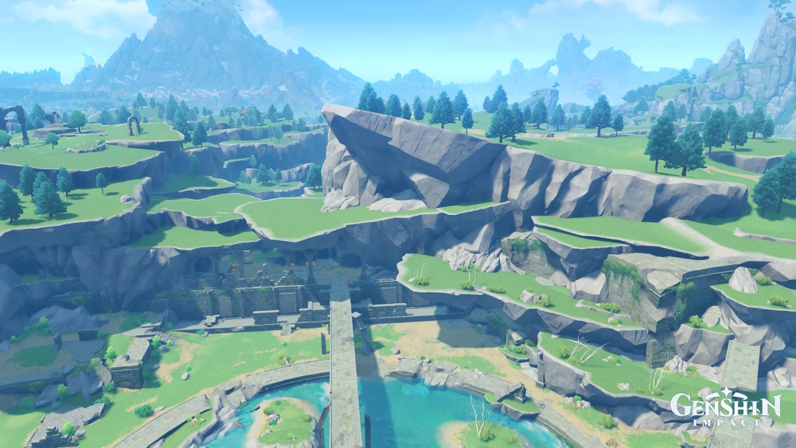
As Montanhas Brightcrown são uma região montanhosa de Mondstadt, formada por grandes montanhas, vales e áreas verdes. O local possui uma paisagem natural e é habitado por diferentes animais e criaturas.
Subáreas: Brightcrown Canyon, Covil do Stormterror.
Brightcrown Canyon
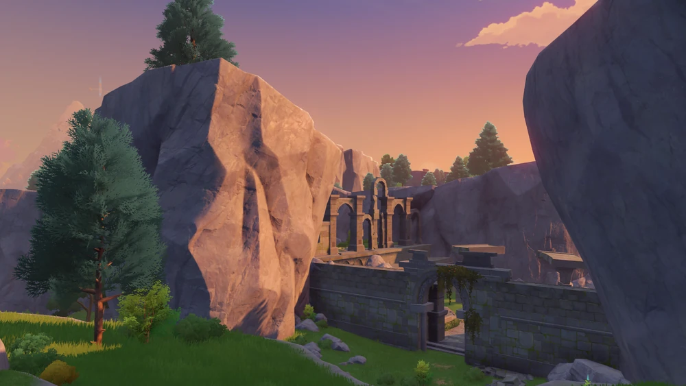
O Brightcrown Canyon é uma área localizada nas Montanhas Brightcrown. O local possui grandes formações rochosas e uma paisagem marcada pelas montanhas.
Covil do Stormterror

O Covil do Stormterror é uma das áreas mais importantes de Mondstadt. O local está relacionado a Dvalin, também conhecido como Stormterror, e possui grandes ruínas e estruturas antigas.
2. Dragonspine
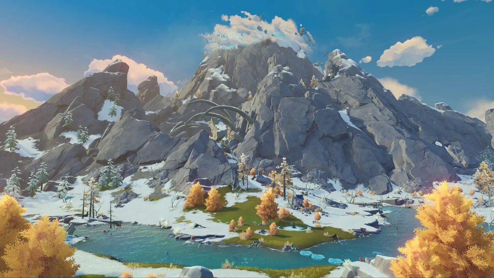
Dragonspine, conhecida como Espinha do Dragão, é uma região extremamente fria e coberta por neve e gelo. Suas montanhas possuem um ambiente difícil para a sobrevivência, com temperaturas muito baixas e diversos perigos, apresentando uma paisagem bem diferente das outras áreas de Mondstadt.
Subáreas: Cidade de Entombed - Palácio Antigo, Arredores da Cidade de Entombed, Skyfrost Nail, Snow-Covered Path, Starglow Cavern, Wyrmrest Valley.
Cidade de Entombed - Palácio Antigo
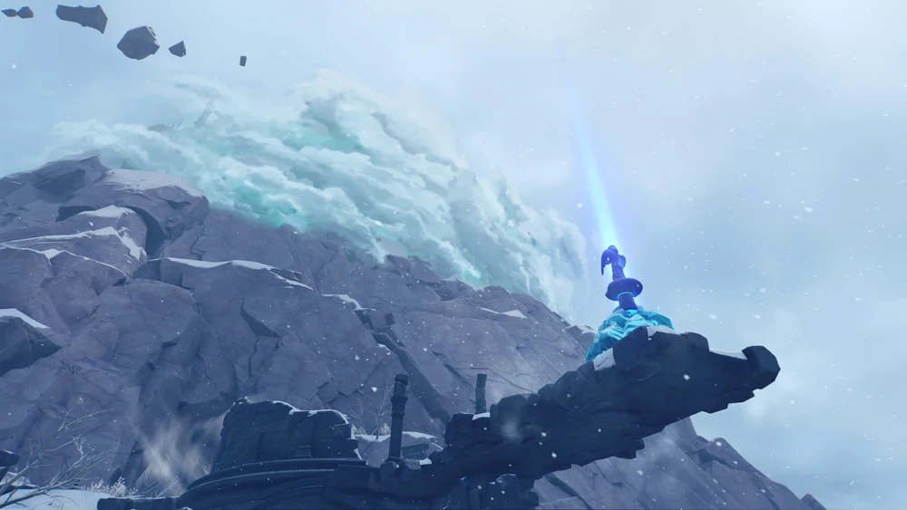
A Cidade de Entombed é uma antiga cidade localizada em Dragonspine. Suas ruínas guardam partes da história da região e de uma antiga civilização.
Arredores da Cidade de Entombed
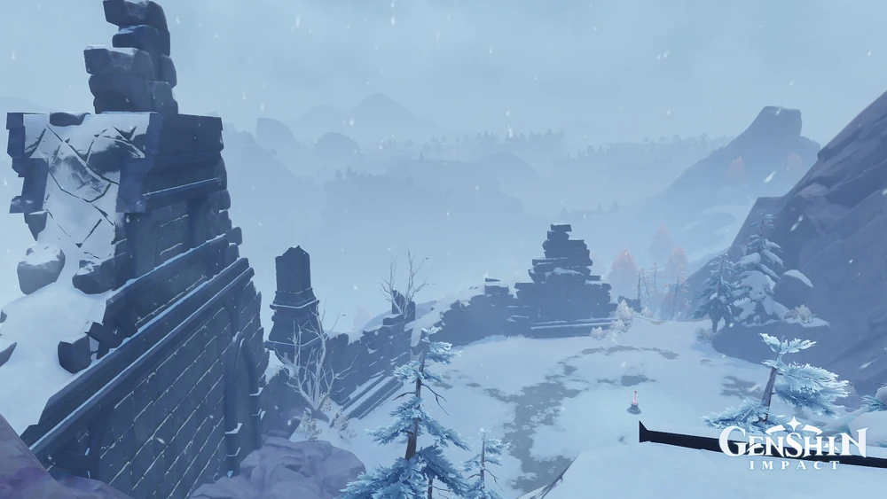
Os arredores da Cidade de Entombed são áreas cobertas por neve e gelo que cercam as ruínas da antiga cidade.
Skyfrost Nail
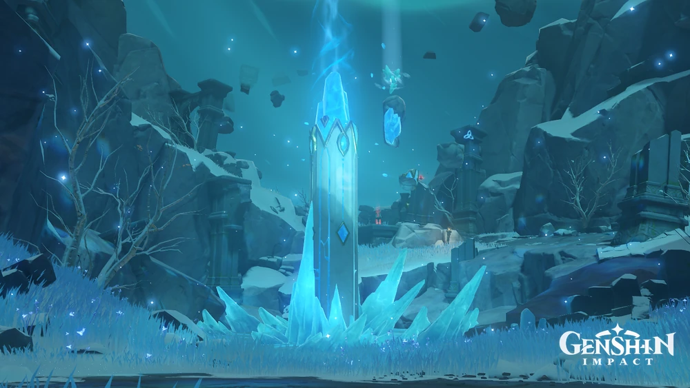
O Skyfrost Nail é uma grande estrutura localizada no alto de Dragonspine. É um dos elementos mais marcantes da paisagem da região.
Snow-Covered Path
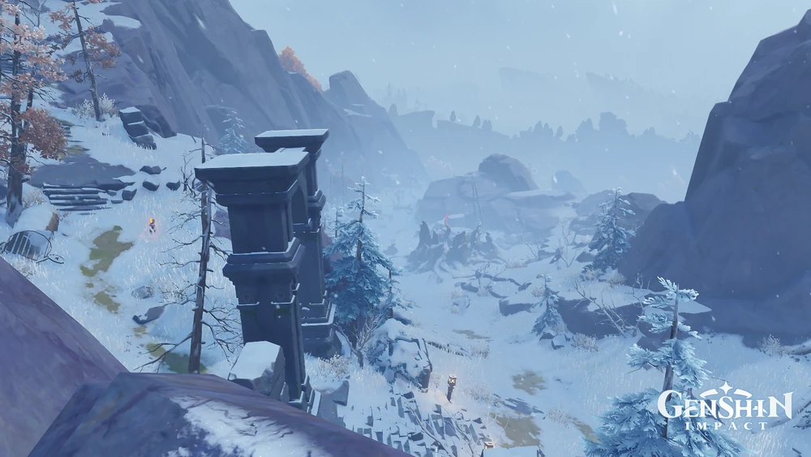
O Snow-Covered Path é um caminho coberto de neve que atravessa parte de Dragonspine, apresentando uma paisagem cercada por montanhas e gelo.
Starglow Cavern
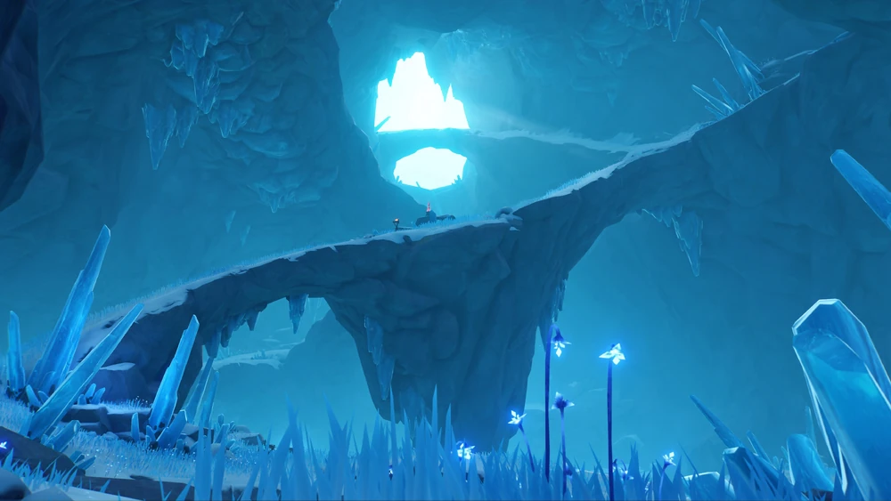
A Starglow Cavern é uma grande caverna localizada em Dragonspine. Seu interior é formado por gelo, pedras e grandes formações naturais.
Wyrmrest Valley
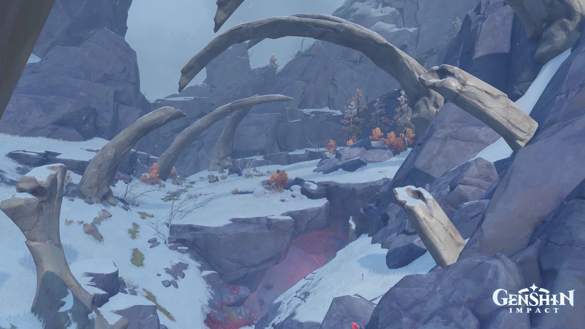
O Wyrmrest Valley é uma área de Dragonspine relacionada aos acontecimentos envolvendo o antigo dragão Durin. O local possui grandes formações de gelo, montanhas e vestígios da história da região.
3. Colina da Canção do Vento
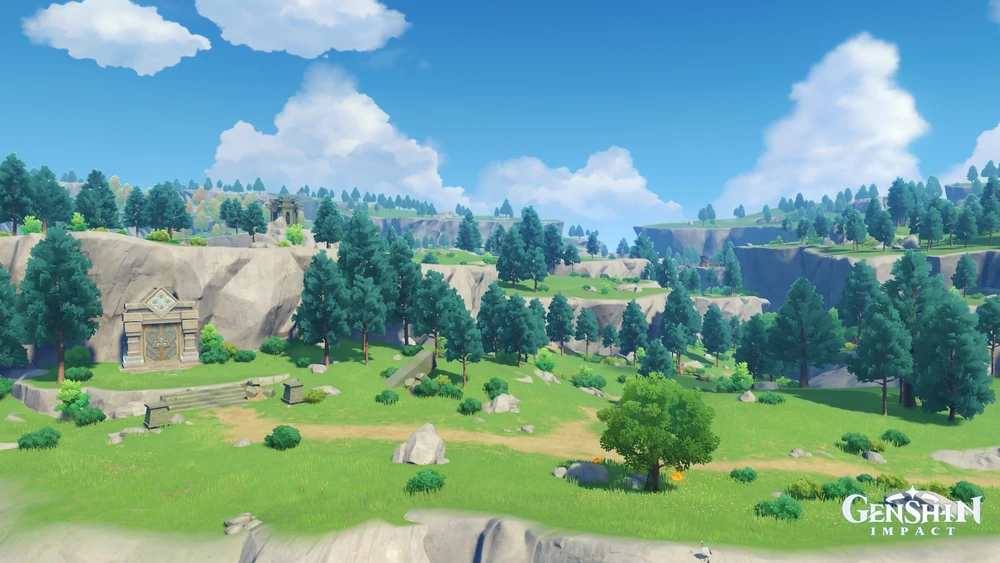
A Colina da Canção do Vento é uma região montanhosa de Mondstadt, marcada por ventos constantes, penhascos e vales verdes. O local abriga importantes marcos históricos e é banhado pelo mar em sua porção sudeste, possuindo grande relevância para a história da região.
Subáreas: Cabo do Juramento, Garganta Dadaupa, Costa do Falcão, Recife de Musk, Nascimento do Vento.
Cabo do Juramento
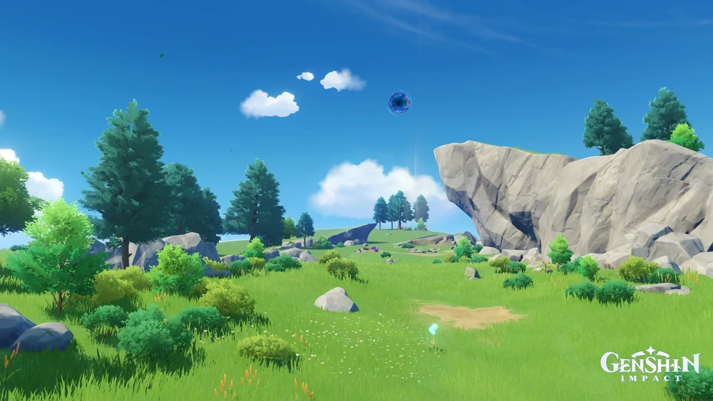
O Cabo do Juramento é um cabo localizado no sudeste da Colina da Canção do Vento, fazendo fronteira com o mar. Diz a lenda que dois amantes fizeram um juramento um ao outro aqui, deixando para trás uma história profundamente comovente. Até hoje, a área é conhecida por ser popular entre os jovens pombinhos e é um ótimo ponto de vista para observar o nascer e o pôr do sol. No local, também é possível encontrar um portal que leva ao Recife de Musk.
Garganta Dadaupa
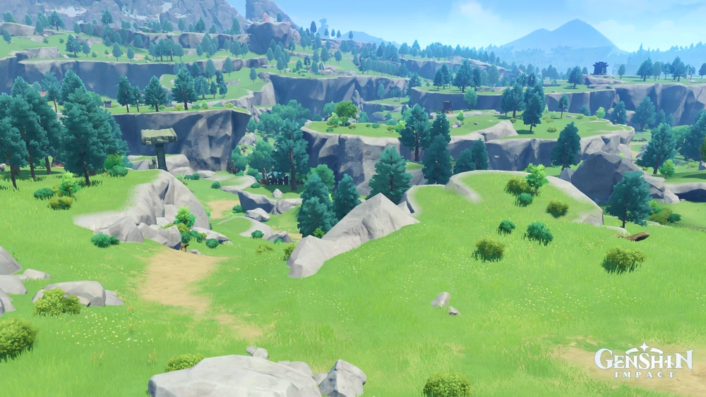
A Garganta Dadaupa é um vale montanhoso próximo a Mondstadt, habitado por um grande número de Hilichurls e conhecido por ser perigoso. É o lar de três importantes tribos Hilichurls: a Tribo da Carne, a Tribo do Sono e a Tribo do Eclipse. Outro local importante dentro dela é o Cemitério das Espadas Esquecidas, que testemunhou a batalha contra os monstros de Khaenri'ah.
Costa do Falcão
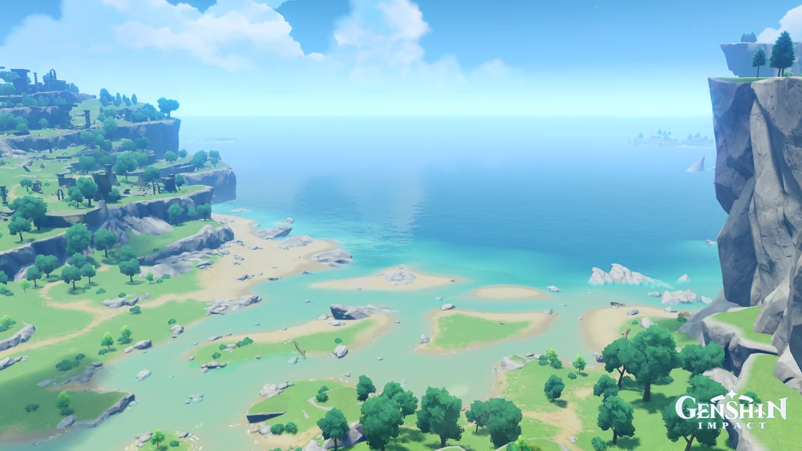
A Costa do Falcão se estende de Nascimento do Vento em direção ao mar, formando, junto com o Cabo do Juramento, uma baía a leste de Mondstadt. O nome da área tem origem na época em que o primeiro Cavaleiro de Boreas lutou contra demônios do Mar Negro na costa, atraindo milhares de falcões que circularam os restos por vários dias. Devido à longa costa e às águas rasas, os cidadãos de Mondstadt costumam vir aqui para passear.
Recife de Musk
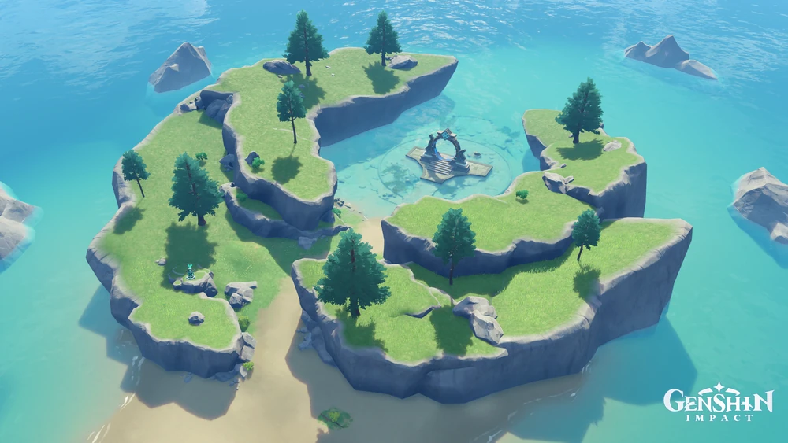
O Recife de Musk é uma ilha localizada próxima ao Cabo do Juramento. Sua principal característica é o portal para o Abismo do Espiral, acessível através de um túnel do espaço-tempo roxo-azulado encontrado no cabo. Antes de Barbatos se tornar o Arconte Anemo e remodelar a região de Mondstadt há 2.600 anos, o Recife de Musk fazia parte do continente principal e era o cume de uma grande montanha, conhecida como Pico dos Pilos.
Nascimento do Vento
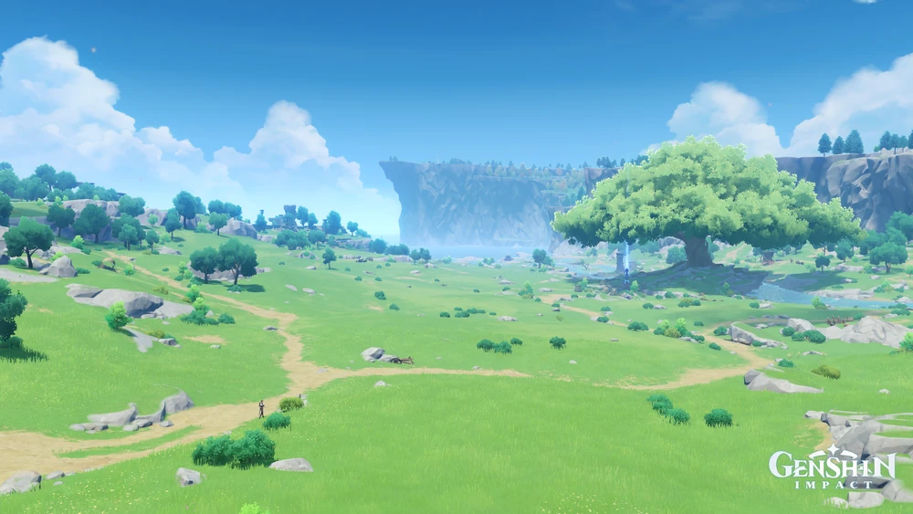
O Nascimento do Vento é uma planície envolta por uma brisa eterna, onde cresce um antigo e monumental carvalho. É o local onde Vennessa ascendeu a Celestia, tornando-se uma deusa que agora vigia Mondstadt como o Falcão do Oeste dos Quatro Ventos. Acredita-se que o enorme carvalho tenha crescido ali após sua ascensão, e uma Estátua dos Sete está localizada em sua base, protegida pela sombra da árvore.
4. Vale de Starfell
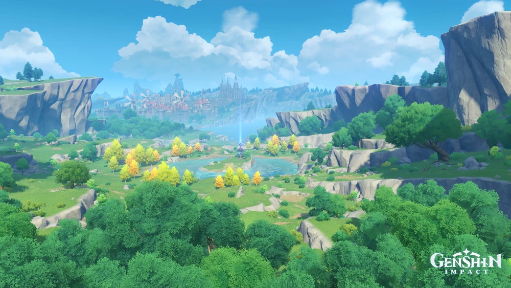
O Vale de Starfell é considerado a região mais diversificada de Mondstadt, estendendo-se desde a ponta do Ponto Stormbearer até os limites do Bosque Sussurrante. A área abriga abundantes lagos, grande variedade de árvores e é onde a Cidade de Mondstadt está localizada, no meio do Lago de Sidra. É também a região onde os Cavaleiros de Favonius exercem suas funções com mais frequência, protegendo moradores e viajantes com guardas patrulhando a área.
Subáreas: Lago de Sidra, Cidade de Mondstadt, Lago de Starfell, Penhasco de Starsnatch, Montanhas Stormbearer, Ponto Stormbearer, Templo dos Mil Ventos, Bosque Sussurrante.
Lago de Sidra
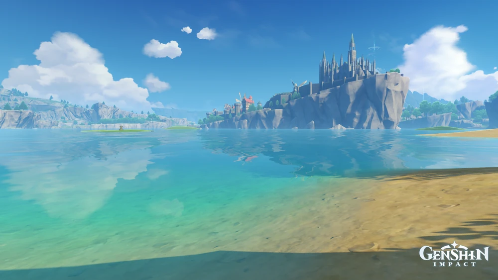
O Lago de Sidra é um lago natural de água doce que cerca a Cidade de Mondstadt. Suas águas nunca congelam e possuem uma aparência cristalina que permanece inalterada há eras — tão clara que é possível ver o fundo, e fresca e refrescante para beber. São justamente essas nascentes que trouxeram fama às sidras e vinhos de Mondstadt, tornando o lago um dos símbolos da nação.
Cidade de Mondstadt
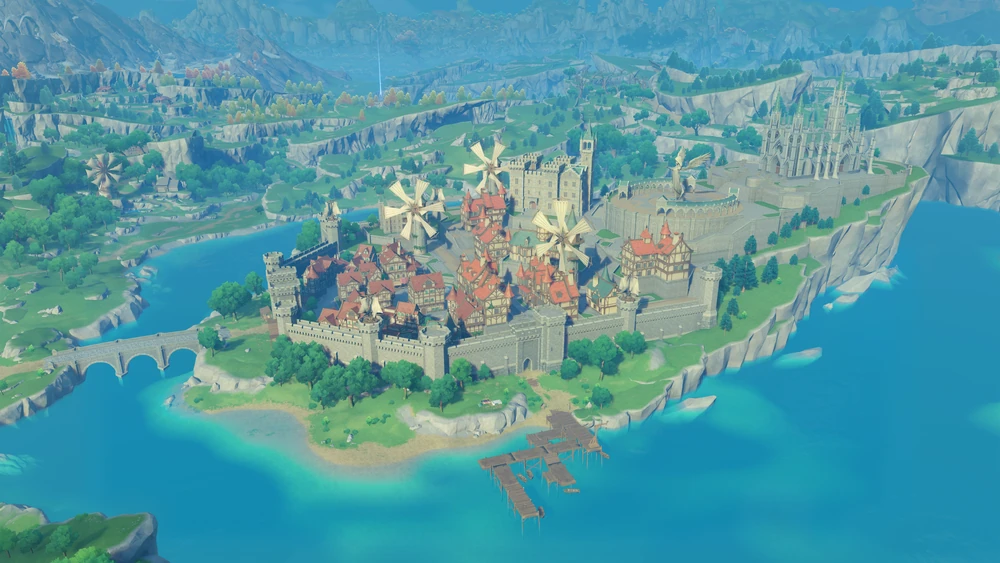
A Cidade de Mondstadt está localizada na parte oeste do Vale de Starfell, sobre uma grande ilha no meio do Lago de Sidra. A cidade possui ruas de paralelepípedos e vários moinhos de vento, cercada por uma grande muralha de pedra na extremidade leste inferior. Uma estátua do Arconte Anemo vigia a cidade, com a Catedral de Favonius ao fundo. Conhecida como a "Cidade da Liberdade", é o centro político, religioso e comercial de toda a região.
Lago de Starfell
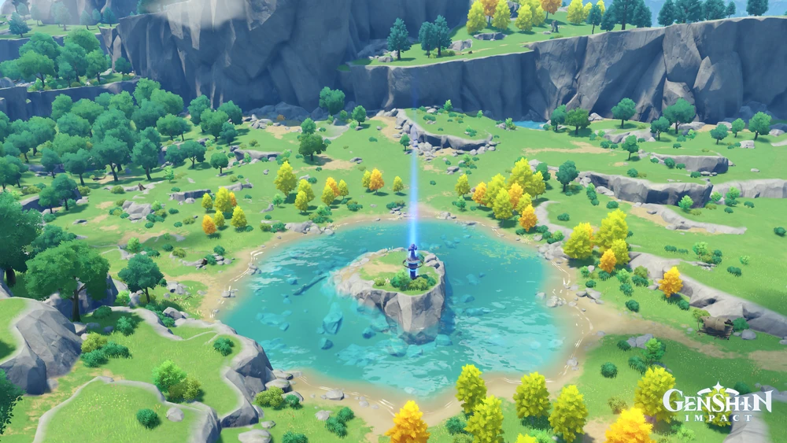
O Lago de Starfell está localizado a leste do Lago de Sidra. É um lago tranquilo cercado por natureza, servindo como um dos pontos marcantes do Vale de Starfell e um local de descanso para viajantes que exploram a região.
Penhasco de Starsnatch
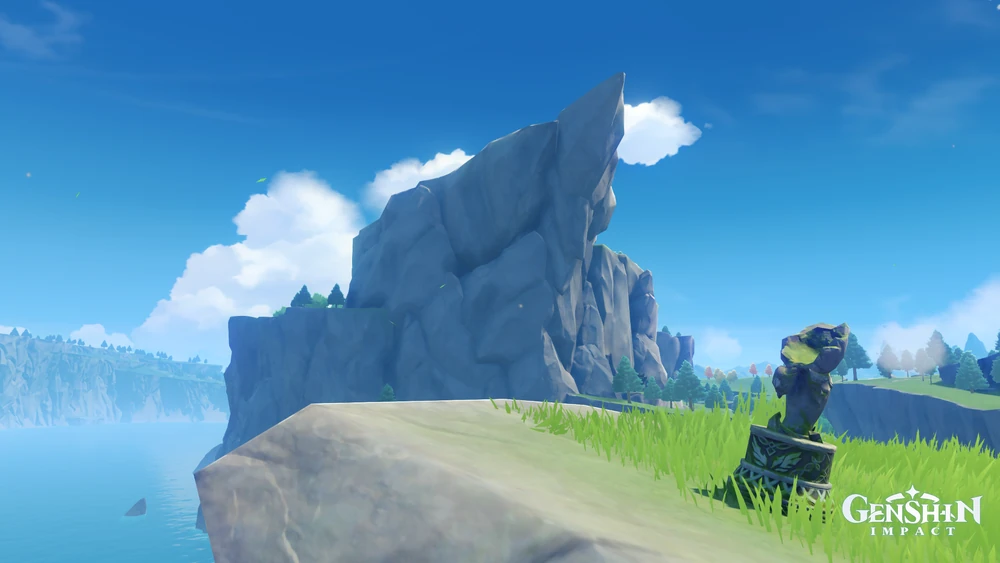
O Penhasco de Starsnatch está localizado na parte leste do Vale de Starfell. Do alto de seu pico, é possível contemplar uma vista privilegiada de toda a região de Mondstadt. O local foi palco de um momento crucial da história, quando Venti tocou a Lira Sagrada no topo do penhasco para convocar Dvalin.
Montanhas Stormbearer
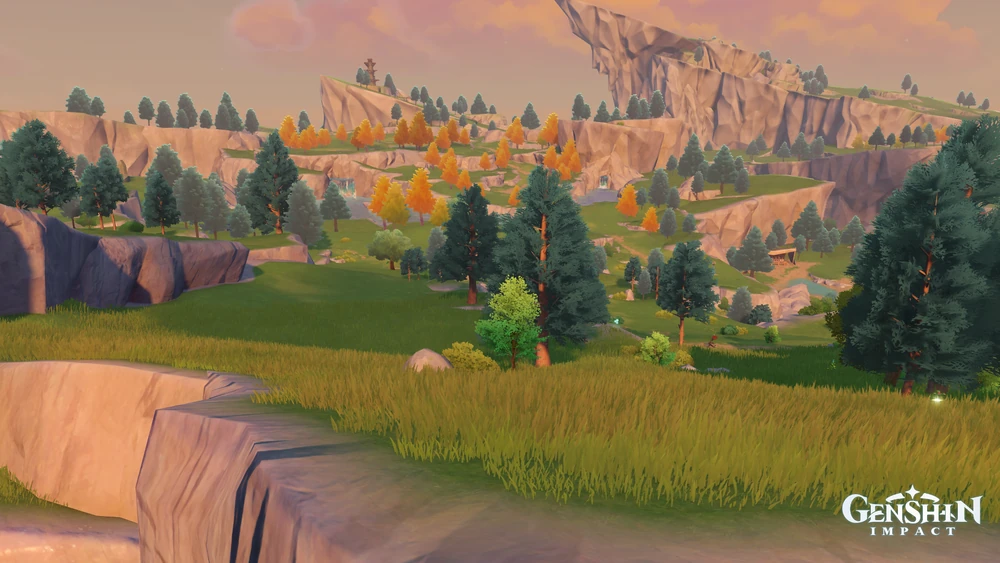
As Montanhas Stormbearer estão localizadas na parte norte do Vale de Starfell. Estas montanhas elevadas eram antigamente um local para observar tempestades que se aproximavam. Hoje, tudo o que resta é uma torre de vigia abandonada, com monstros rondando a área.
Ponto Stormbearer
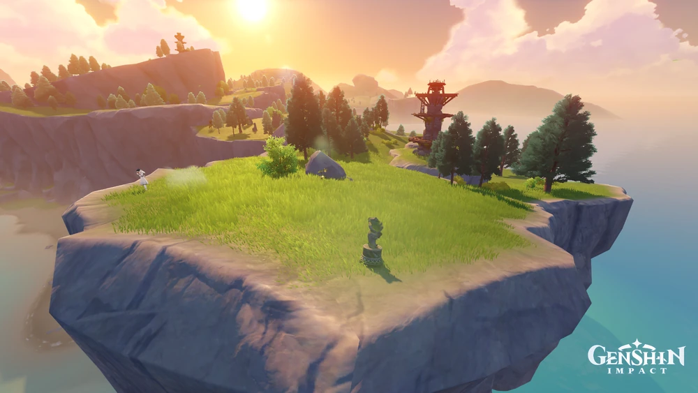
O Ponto Stormbearer é uma subárea do Vale de Starfell. A costa logo ao sul do local é onde o Viajante inicia sua jornada por Teyvat ao lado de Paimon. O local também é habitado por Harry, um Cavaleiro de Favonius, e Vind, um observador de tempestades que mantém vigília em nome de Mondstadt.
Templo dos Mil Ventos
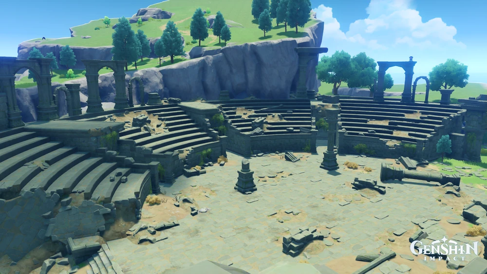
O Templo dos Mil Ventos é uma antiga arena ao ar livre que foi usada como palco de combate durante o Período Aristocrático, quando escravos eram forçados a lutar entre si para a diversão dos antigos nobres. Originalmente, foi construído pelo povo de Arcádia para adorar Istaroth, a Governante do Tempo. Após a queda de Arcádia, o templo ficou em ruínas. Em suas colunas de pedra, ainda é possível vislumbrar gravações elegantes com a máxima: "O vento traz as sementes das histórias, o tempo permite que elas criem raízes."
Bosque Sussurrante
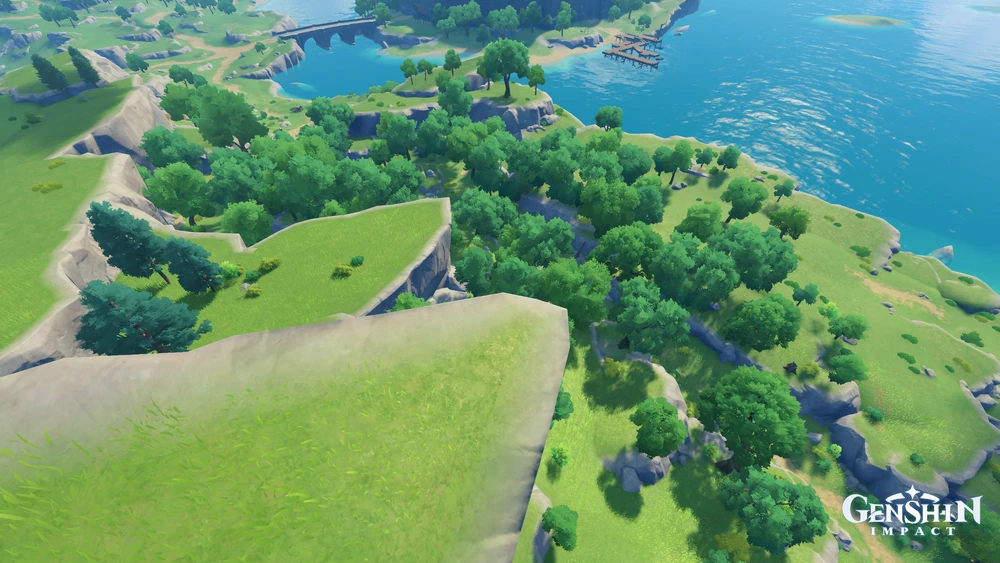
O Bosque Sussurrante é uma floresta densa e profunda localizada próxima ao Lago de Starfell e à Cidade de Mondstadt. Seu nome vem do som das folhas sopradas pelo vento, que os viajantes frequentemente confundem com sussurros. É o local onde o Viajante encontra Venti e Dvalin pela primeira vez. O "tesouro" de Klee também está enterrado aqui, mas é roubado por um Mago do Abismo durante os eventos de sua Missão Lendária.
5. Pico do Repouso do Vento
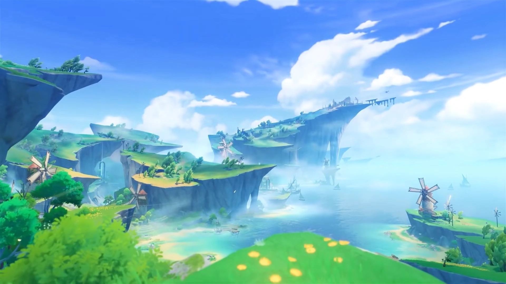
O Pico do Repouso do Vento é uma região montanhosa ao norte de Mondstadt, situada acima do Lago de Sidra. A área combina campos floridos, montanhas elevadas e um porto movimentado, sendo o lar dos campos de Flores do Repouso do Vento e de importantes marcos históricos ligados ao Templo do Espaço.
Subáreas: Porto Dornman, Millhaven, Local do Antigo Sanatório.
Porto Dornman
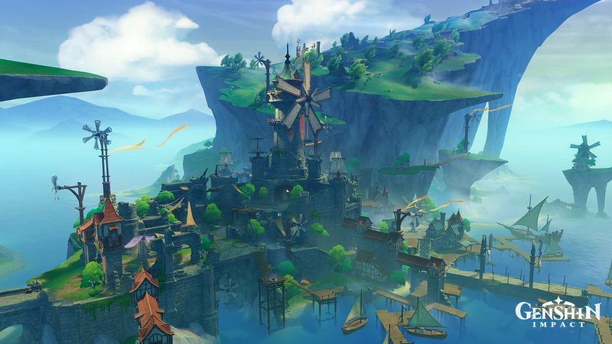
O Porto Dornman é uma cidade portuária localizada ao norte do Lago de Sidra. Como um dos principais centros comerciais do continente, recebe um fluxo constante de navios mercantes de diversas nações. Entre seus pontos de interesse estão a taverna Devil's Cut, a floricultura Fragrant Whispers, a base dos Cavaleiros de Favonius focada na Companhia de Arqueiros e as Ruínas dos Cavaleiros de Favonius, um antigo campo de batalha onde os Cavaleiros enfrentaram o Abismo.
Millhaven
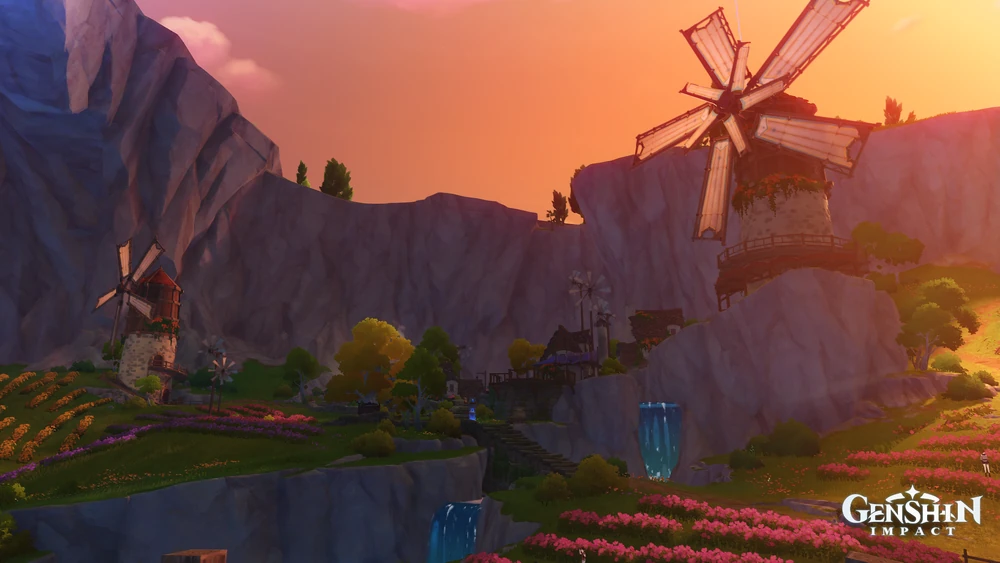
Millhaven é uma vila idílica conhecida por seus belos campos de Flores do Repouso do Vento e pela produção de fragrâncias. É um lugar pacífico e tranquilo, famoso por suas flores de aroma adocicado. Entre seus pontos de interesse estão o restaurante Shattuck e o quadro de avisos da vila, que frequentemente contém mensagens curiosas deixadas pelos moradores.
Local do Antigo Sanatório
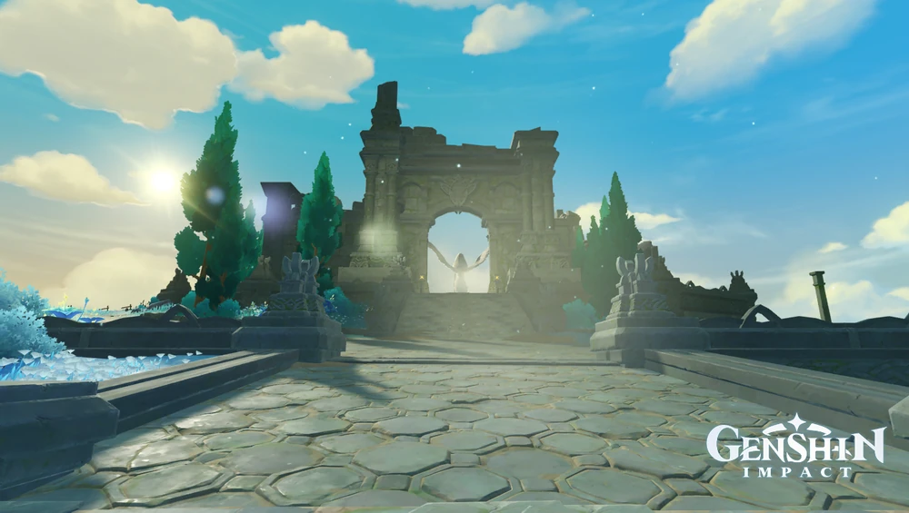
O Local do Antigo Sanatório é um antigo sanatório que foi demolido alguns anos atrás. Originalmente, foi construído sobre as ruínas do Templo do Espaço depois que este foi elevado aos céus. O local é administrado por seu porteiro, Mann, que supervisiona os trabalhos de demolição e a preservação do patrimônio cultural. O sanatório guarda histórias tocantes de seus antigos pacientes, registradas em documentos e cartas deixados para trás.
6. Planalto do Uivo do Vento
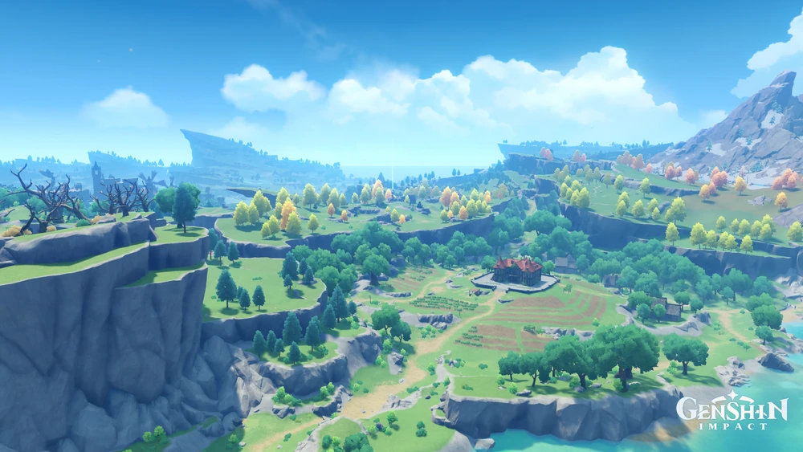
O Planalto do Uivo do Vento é uma área rural no sudoeste de Mondstadt, conhecida por suas fontes cristalinas, pomares e florestas verdejantes. É o lar da pacata vila de Springvale e da principal vinícola da região, a Adega Dawn. O planalto se estende até o território dominado por lobos de Wolvendom, uma área densa e perigosa que os moradores locais costumam evitar.
Subáreas: Adega Dawn, Springvale, Wolvendom.
Adega Dawn
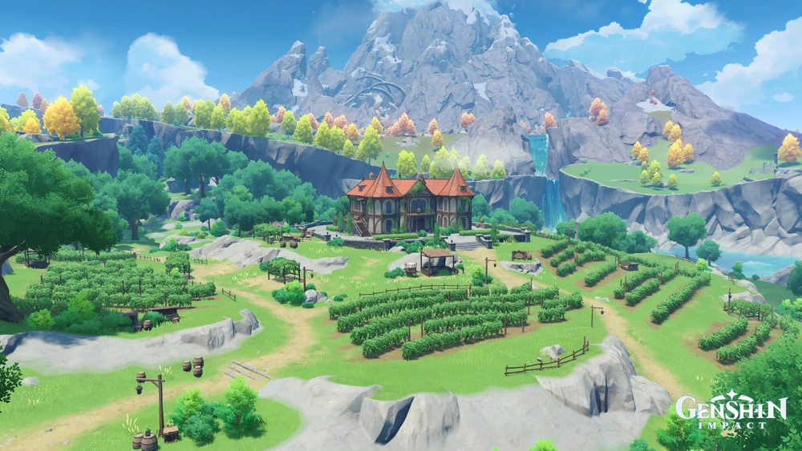
A Adega Dawn é a principal vinícola de Mondstadt e se especializa na produção de Vinho de Dente-de-Leão. A propriedade pertence ao Clã Ragnvindr há várias gerações e é tão bem-sucedida que representa toda a indústria vinícola da região. Seu atual proprietário é Diluc, que herdou o local há quatro anos após o falecimento de seu pai, Crepus. A mansão fica no centro da propriedade, cercada por fileiras de vinhedos e pequenos depósitos.
Springvale
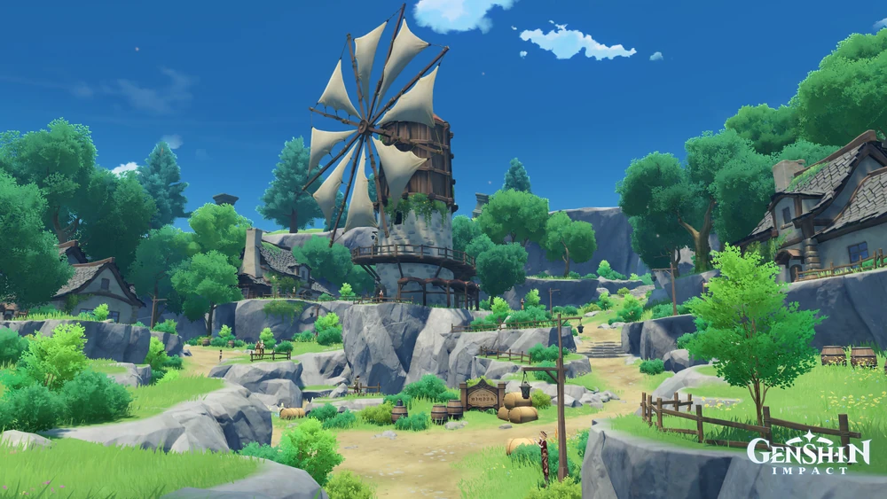
Springvale é uma pequena vila localizada na parte sudeste do Planalto do Uivo do Vento. O local possui ruas de terra batida e casas térreas de telhado azul, com um único moinho de vento que vigia a vila e uma fonte natural logo abaixo dele. Segundo a lenda, a vila foi formada quando uma mãe levou seu filho gravemente doente a um poço vazio, onde uma fada encheu o poço com água que salvou a vida do menino. O milagre atraiu pessoas para a área e um assentamento cresceu ao redor da fonte, tornando-se Springvale.
Wolvendom
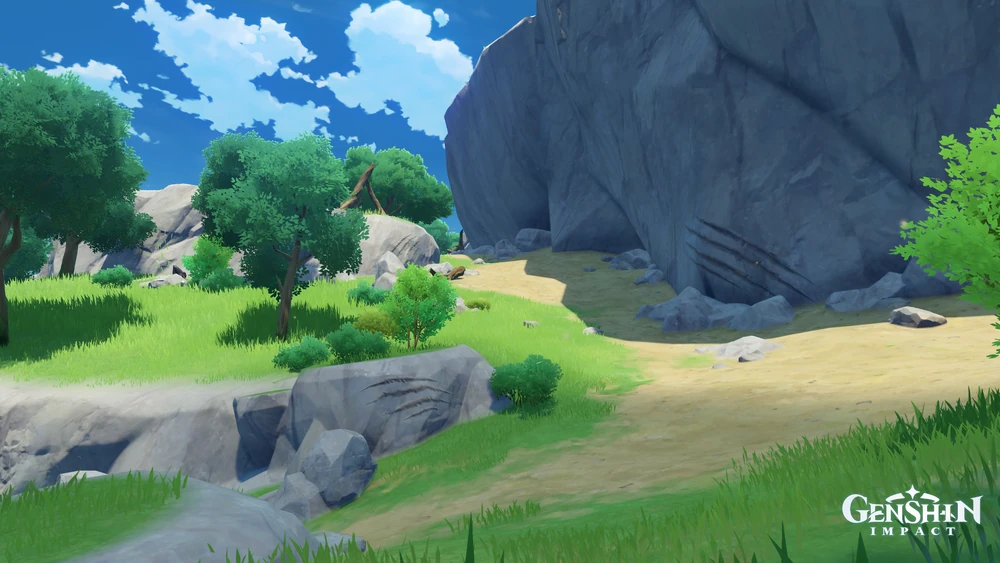
Wolvendom é uma floresta profunda e sombria, onde o silêncio dá calafrios. Uma matilha de lobos habita as sombras — tão perigosa que até os caçadores mais destemidos não se aventuram por lá levianamente. O uivo dos lobos à noite pode ser ouvido de longe. É o lar de Andrius, o Lobo do Norte dos Quatro Ventos, e de sua matilha, sendo uma das áreas mais perigosas e misteriosas de Mondstadt.
↑ Voltar ao início